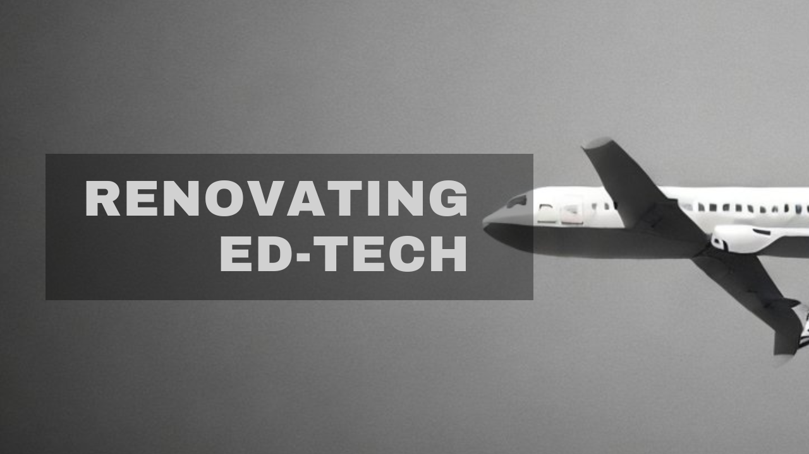

Teamed up with a fellow innovator Yash Goyal to create an innovative ed-tech product.
Past Pilot uses private-key based, secure storage for users to store and share their academic resources. Additionally, it employs cosine-similarity, an NLP feature, to allow for intelligent searching in the uploaded resources.